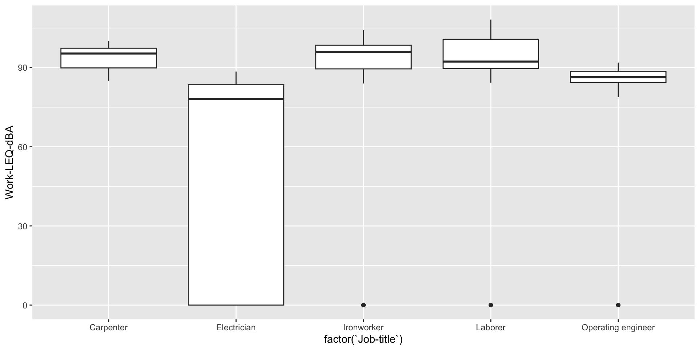
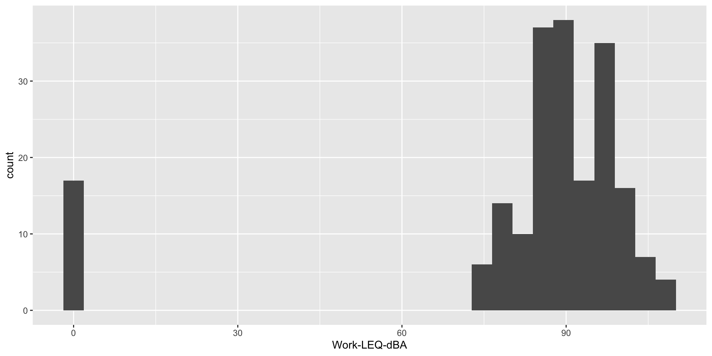
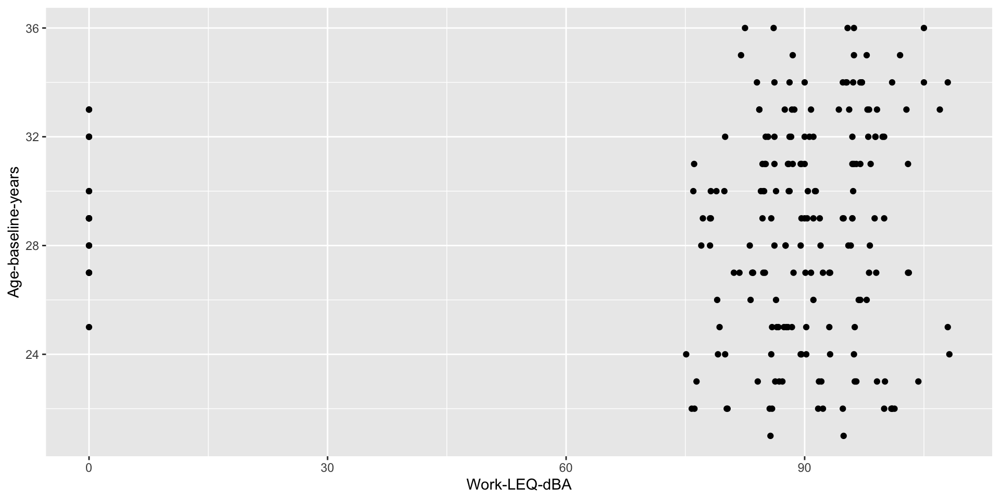
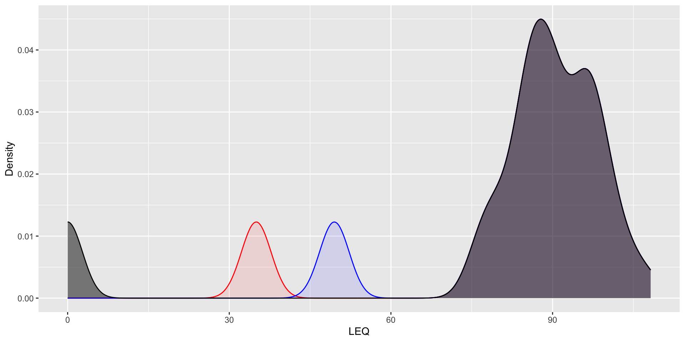
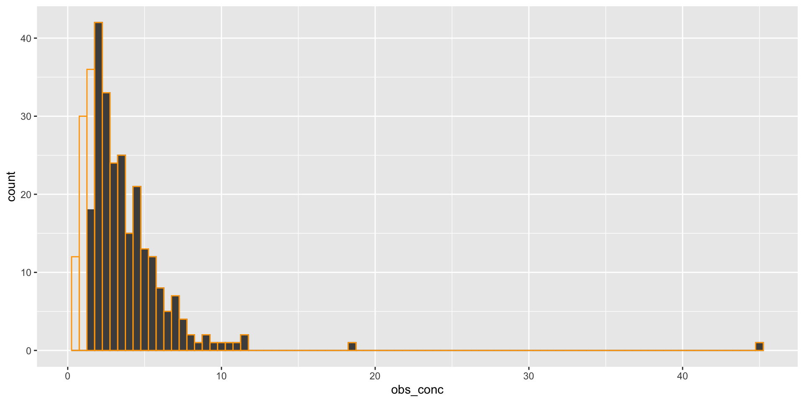
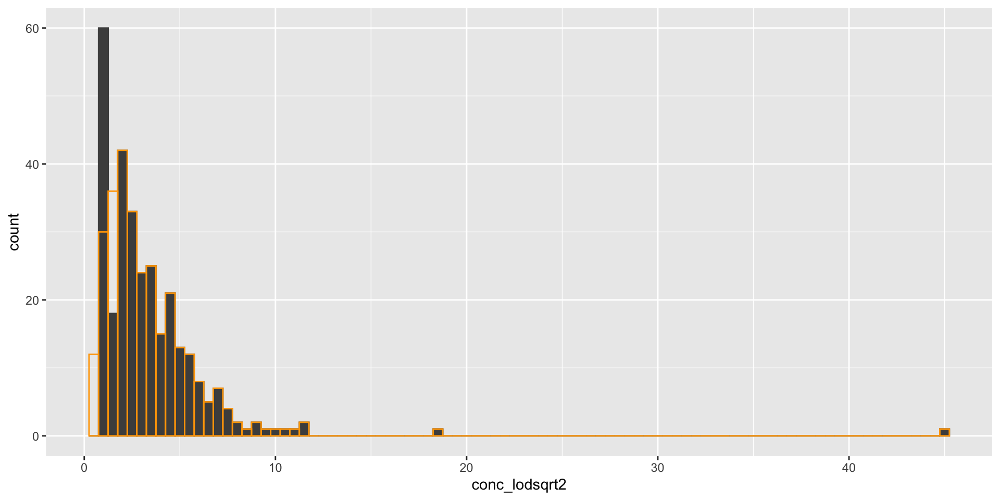
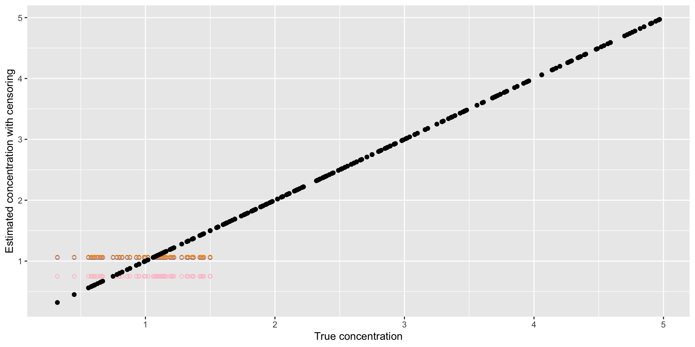

Carpenter Carpentr Electrican Electrician
38 2 2 39
Ironworker Ironworkr Laboerr Laborer
40 2 2 34
Lborer Operaing engineer Operating engineer
2 2 38 Types of data, descriptive statistics, and censoring (Lecture 4)
Lecture 4: Types of data, descriptive statistics, censored data, more R
What we’ll cover today
The basics
Types and scales of data
Descriptive analysis and visualization
Distribution
Central tendency
Dispersion
Censored data
The basics: understanding exposure

White E, Armstrong BK, Saracci R. 2008
Assessing exposures

Source: Nieuwenhuijsen M. et al, New develpments in exposure assessment: The impact on the practice of health risk assessment and epidemiological studies. Environment International, December 2006, Vol 32 (8) Pgs 996 -1009
Exposure data examples

Exposure data examples

Ignacio and Bullock, AIHA, 2006
Types and scales of data
Exercise
Imagine a study of exposure to 1,4 dioxane in drinking water among community members in Ann Arbor
Think of an example of potentially relevant exposure information for each of following data scales:
Binary
Nominal
Ordinal
Numeric

Data that might be available for exposure analysis

Tool to help document exposure measurements
AIHA Basic Exposure Assessment and Sampling Spreadsheet

Let’s explore!
Tool to help collect information on exposure scenarios

Let’s explore!
https://aiha-assets.sfo2.digitaloceanspaces.com/AIHA/resources/Public-Resources/IHEST_V15.xlsm
Note: you mus enable Macros in Excel for tool to work
Ramifications of data scales
When exposures can be quantified, best to capture as quantitative rather than categorical
E.g., #cigarettes per day instead of <14, 15-24, 25-34, etc.
Even if categories equally sized, mean value in each category cannot be computed
Can always collapse quantitative to categorical – but not vice versa
- May even want to do this, as ordinal is easy to understand, makes no dose-response assumptions
Descriptive analysis
Before we can make inference from data we must thoroughly examine variables
Catch mistakes
Look for patterns
Find violations of statistical assumptions
Generate hypotheses
Avoid headaches later

Scope of dataset/analysis
Univariate
- Measurements on one variable per subject
Bivariate
- Measurements on two variables per subject
Multivariate (not today’s focus)
- Measurements on many variables per subject
Univariate analyses
Characteristics of single variable
Typically
Distribution (frequency distribution)
Central tendency (mean, median, mode)
Dispersion (range, quartiles, absolute deviation, variance, standard deviation)
Distribution: categorical (table) (table() in R)
So… this is a problem. Stupid typos! <shakes fist at sky>
How do we fix them?
Example: fixing errors in the data in R
How to fix these? mutate them!
Example for fixing one misspelling (“Lborer”)
Carpenter Carpentr Electrican Electrician
38 2 2 39
Ironworker Ironworkr Laboerr Laborer
40 2 2 36
Operaing engineer Operating engineer
2 38 Example: fixing all errors in the data in R
But! We can do all of the trades at once
What did that do?
Success!! Down from 11 categories of job title to just the actual 5
Carpenter Electrician Ironworker Laborer
40 41 42 38
Operating engineer
40 Can use same approach for other variables with misspellings
Distribution: categorical (ordinal) (ggplot() + geom_boxplot() in R)

OR
Distribution: quantitative histogram

Central tendency: mean, median, mode

Mean and median table (summarize() in R)
# A tibble: 1 × 2
mean_leq median_leq
<dbl> <dbl>
1 83.0 89.5Dispersion
Measures which identify spread of data (i.e., how far measurements are from “center”)
Range (min to max)
Quartiles (Q3 – Q4 is interquartile range, IQR)
Standard deviation (SD) Variance

Dispersion (summarize() in R)
# A tibble: 1 × 5
sd_leq iqr_leq var_leq min_leq max_leq
<dbl> <dbl> <dbl> <dbl> <dbl>
1 26.3 11.8 691. 0 108.Dispersion: standard deviation vs variance
Standard deviation
Not dependent on n
Not affected by number of measurements
Expressed in same units as data
Commonly used in exposure analysis
Variance is square of standard deviation
Squaring eliminates negative values
Unit is square of measurement unit (!) – i.e., not same units as data
Values farther from mean contribute more to variance
Commonly used in exposure analysis
Excel tool available for basic descriptive statistics: IHSTAT

Bivariate analyses
Allow us to begin to explore relationships between variables
Scatter plot
Correlation
Cross-tabulation
Bivariate: scatter plot (ggplot() + geom_point() in R)

Bivariate: Pearson correlation (cor.test() in R)
- \(\rho\) (Pearson’s correlation coefficient) is amount of change in one value you expect from change in another value
- Assumptions:
- Both variables numeric data
- Both variables normally distributed
- Absence of outliers
- Linear relationship
- Homeskedasticity

Pearson correlation coefficient
Pearson's product-moment correlation
data: ehs655$`Work-LEQ-dBA` and ehs655$`Age-baseline-years`
t = -0.074189, df = 199, p-value = 0.9409
alternative hypothesis: true correlation is not equal to 0
95 percent confidence interval:
-0.1435493 0.1332326
sample estimates:
cor
-0.005259052 Bivariate: Spearman correlation (cor.test() in R)
Spearman’s rank correlation coefficient (\(\rho_s\))
Pearson correlation coefficient between ranked variables
Raw scores \(X_i\), \(Y_i\) converted to ranks \(x_i\), \(y_i\)
Nonparametric (no distributional assumptions)
Assumptions:
Numeric or interval data
Monotonic relationship

Spearman correlation coefficient
Spearman's rank correlation rho
data: ehs655$`Work-LEQ-dBA` and ehs655$`Age-baseline-years`
S = 1220766, p-value = 0.1663
alternative hypothesis: true rho is not equal to 0
sample estimates:
rho
0.09800029 Bivariate: Spearman vs Pearson correlation coefficient

Bivariate: cross-tabulation (xtabs() in R)
# A tibble: 201 × 2
`Job-title` County
<chr> <chr>
1 Laborer King
2 Laborer Pierce
3 Laborer Pierce
4 Laborer Snohomish
5 Laborer Kitsap
6 Laborer Thurston
7 Laborer King
8 Laborer King
9 Laborer Pierce
10 Laborer Snohomish
# ℹ 191 more rows County
Job-title Adams Benton Chelan Clallam Clark Cowlitz Douglas Ferry
Carpenter 0 0 2 1 0 0 0 0
Electrician 0 0 1 0 0 1 0 0
Ironworker 1 1 3 2 0 2 1 1
Laborer 0 0 1 0 0 0 0 0
Operating engineer 0 0 2 1 2 0 1 1
County
Job-title Franklin Garfield Grays Harbor Jefferson King Kitsap
Carpenter 0 0 2 1 8 1
Electrician 0 0 2 0 7 3
Ironworker 1 1 1 2 7 1
Laborer 0 0 0 0 14 3
Operating engineer 0 0 0 0 4 1
County
Job-title Kittitas Klickitat Lewis Lincoln Mason Okanogan Pacific
Carpenter 1 0 2 0 3 0 0
Electrician 2 0 4 0 2 0 0
Ironworker 1 0 0 1 2 1 1
Laborer 0 0 0 0 0 0 0
Operating engineer 1 1 2 0 0 0 0
County
Job-title Pend Oreille Pierce Skagit Skamania Snohomish Spokane
Carpenter 0 5 5 0 1 0
Electrician 0 5 3 0 2 0
Ironworker 0 1 2 1 0 1
Laborer 0 6 3 0 4 0
Operating engineer 1 4 3 1 0 2
County
Job-title Thurston Whatcom Whitman Yakima
Carpenter 2 6 0 0
Electrician 4 4 0 1
Ironworker 0 3 1 3
Laborer 5 2 0 0
Operating engineer 0 3 0 10Censored data
Uncensored/complete
Value of each sample unit observed/known
Default assumption
Left censored
- Data <min value
Interval censored
- Data between min and max
Right censored
- Data >max value

Our noise data
\(L_{EQ}\) measured from 70-140 dBA
Minutes with levels that never exceed 70 dBA assigned 0 dBA
Shifts with mixture of minutes above and below 70 dBA may yield shift average <70 dBA
If levels never exceed 70 dBA in a minute, dosimeters assign 0 dBA
Note: 0 dBA is not a tenable number – this implies the absence of any audible sound, which is not a condition experienced on construction sites, ever
Common approach #1 to dealing with censored data
\[ \frac{LOD}{2} \]
Assign all censored data 1/2 LOD
Assumes data uniformly distributed below LOD

Common approach #2 to dealing with censored data
Hornung and Reed (1990)
\[ \frac{LOD}{\sqrt2} \]
More accurate than LOD/2 when data normally or lognormally distributed
Okay if <~50% data censored if low to moderate variability
Less accurate than LOD/2 for highly skewed data

Let’s implement these two approaches and compare
Method 1 (\(LOD/2\))
Method 2 (\(LOD/sqrt2\))
Let’s compare density plots of these results vs original

Better approach #3 to dealing with censored data
“\(\beta\)-substitution method” (Hewett and Ganser 2010)
Computes a \(\beta\) factor for an exposure (i.e., \(\beta\)*LOD) that can be used instead of \(LOD/2\) or \(LOD/\sqrt2\)
For lognormal data (e.g., chemicals), NOT normal data (e.g., noise)
Minimum \(N\) for this equation should be ≥5 when data are censored up to 50%
This method is beyond the class scope
- But we have included an example below if you are interested
Censored data example
Let’s simulate some R code for some random, log-normal contaminant with a LOD of 1.5
# A tibble: 300 × 4
true_conc LOD obs_conc above_LOD
<dbl> <dbl> <dbl> <dbl>
1 2.98 1.5 2.98 1
2 3.48 1.5 3.48 1
3 2.63 1.5 2.63 1
4 2.37 1.5 2.37 1
5 0.61 1.5 NA 0
6 3.16 1.5 3.16 1
7 2.18 1.5 2.18 1
8 2.02 1.5 2.02 1
9 3.7 1.5 3.7 1
10 7.6 1.5 7.6 1
# ℹ 290 more rowsWe can visualize the distribution of the true contaminant levels versus what we observe due to values falling below the LOD of 1.5

Method #1: \(LOD/2\)
Let’s create a new column where values at or below 1.5 are substituted with \(LOD/2\)
# A tibble: 300 × 3
true_conc obs_conc conc_lod2
<dbl> <dbl> <dbl>
1 2.98 2.98 2.98
2 3.48 3.48 3.48
3 2.63 2.63 2.63
4 2.37 2.37 2.37
5 0.61 NA 0.75
6 3.16 3.16 3.16
7 2.18 2.18 2.18
8 2.02 2.02 2.02
9 3.7 3.7 3.7
10 7.6 7.6 7.6
# ℹ 290 more rowsLet’s visualize the new distribution (grey) compared to the true distribution (orange)
Method #2: \(LOD/\sqrt2\)
Let’s create a new column where values at or below 1.5 are substituted with \(LOD/\sqrt2\)
# A tibble: 300 × 4
true_conc obs_conc conc_lod2 conc_lodsqrt2
<dbl> <dbl> <dbl> <dbl>
1 2.98 2.98 2.98 2.98
2 3.48 3.48 3.48 3.48
3 2.63 2.63 2.63 2.63
4 2.37 2.37 2.37 2.37
5 0.61 NA 0.75 1.06
6 3.16 3.16 3.16 3.16
7 2.18 2.18 2.18 2.18
8 2.02 2.02 2.02 2.02
9 3.7 3.7 3.7 3.7
10 7.6 7.6 7.6 7.6
# ℹ 290 more rowsLet’s visualize the new distribution (grey) compared to the true distribution (orange)

Method #3: \(\beta\)-substitution
Let’s create a new column where values at or below 1.5 are substituted using the \(\beta\)-substitution method. First let’s load the function to perform the method
Click to view R Script
# Title: Beta substitution method
# Author: Abas Shkembi (ashkembi@umich.edu) & Jie He (jayhe@umich.edu)
# Last updated: May 8, 2025
#------------------------------------------------------------
### Description
### conducts beta-substitution method for values <LOD
### following Ganser & Hewett, JOEH, 2010
#------------------------------------------------------------
# create function to perform beta-substitution
beta_substitution <- function(data, x_var, lod_var) {
# Check for multiple, different LOD values in non-detects
lod_values <- unique(data[[x_var]][data[[lod_var]] == 0])
if (length(lod_values) > 1) {
stop("Multiple LOD values detected. All non-detects must have the same LOD.")
}
LOD <- if (length(lod_values) == 0) NA else lod_values[1]
n <- nrow(data)
k <- sum(data[[lod_var]] == 0)
if (k == 0) {
return(list(
beta_mean = NA_real_,
beta_gm = NA_real_,
substituted_mean = mean(data[[x_var]]),
substituted_gm = exp(mean(log(data[[x_var]]))),
substituted_gsd = NA_real_,
substituted_x95 = NA_real_
))
}
if (n - k < 2) {
stop("Insufficient detected values (need at least 2).")
}
# Step 1: Create a detects array
detected <- data[[x_var]][data[[lod_var]] == 1]
# Step 2: Calculate input and intermediate values
y_bar <- mean(log(detected))
z <- qnorm(k / n)
fz <- dnorm(z) / (1 - pnorm(z))
sy <- sqrt((y_bar - log(LOD))^2 / (fz - z)^2)
f_sy_z <- (1 - pnorm(z - sy / n)) / (1 - pnorm(z))
# Step 3: Calculate beta_mean
beta_mean <- (n / k) * pnorm(z - sy) * exp(-sy * z + sy^2 / 2)
# Step 4: Substitute each non-detect with beta_mean * LOD, and calculate the sample mean
data_substituted_mean <- data[[x_var]]
data_substituted_mean[data[[lod_var]] == 0] <- beta_mean * LOD
mean_sub <- mean(data_substituted_mean)
# Step 5: Calculate beta_gm
beta_gm <- exp(- (n * (n - k) / k * log(f_sy_z) - sy * z - (n - k) / (2 * k * n) * sy^2))
# Step 6: Substitute each non-detect with beta_gm * LOD, and calculate the sample GM
data_substituted_gm <- data[[x_var]]
data_substituted_gm[data[[lod_var]] == 0] <- beta_gm * LOD
gm_sub <- exp(mean(log(data_substituted_gm)))
# Step 7: Recalculate sy and then calculate the sample GSD
ratio <- mean_sub / gm_sub
if (ratio > 1) {
sy_new <- sqrt((2 * n / (n - 1)) * log(ratio))
} else {
sy_new <- 0
}
gsd_sub <- exp(sy_new)
# Step 8: Calculate the sample 95th percentile
x95 <- exp(log(gm_sub) - (sy_new^2) / (2 * n) + 1.645 * sy_new)
list(
# the beta factor we are interested in
beta_mean = beta_mean, #*** in the original scale
beta_gm = beta_gm, # in the geometric scale
# after replacing <LOD values with beta * LOD...
substituted_mean = mean_sub, # the mean of the new distribution
substituted_gm = gm_sub, # the geometric mean of the new distribution
substituted_gsd = gsd_sub, # the geometric SD of the new distribution
substituted_x95 = x95 # the 95th percentile of the new distribution
)
}Then we can call the function: beta_substitution(data, x_var, lod_var)
data: your dataframex_var: the observed concentration datalod_var: whether the observed concentration is above the LOD
$beta_mean
[1] 0.7107854
$beta_gm
[1] 0.2118354
$substituted_mean
[1] 3.442469
$substituted_gm
[1] 2.131957
$substituted_gsd
[1] 2.665954
$substituted_x95
[1] 10.68096We now have our \(\beta\) factor (0.7107854), which we can multiply with our LOD (1.5)
Comparing censoring methods
We replaced concentrations at or below the LOD with the following values:
LOD/2 = 1.5/2 = 0.75
LOD/\(\sqrt2\) = 1.5/\(\sqrt2\) = 1.06
\(\beta\)-substitution = LOD*\(\beta\) = 1.5*0.7107854 = 1.07
Now let’s look at scatterplots of each of these censored estimate approaches
